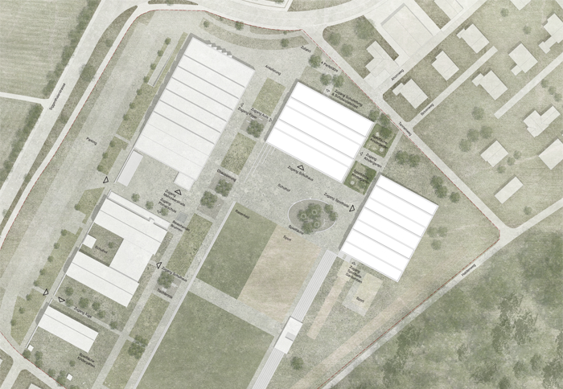
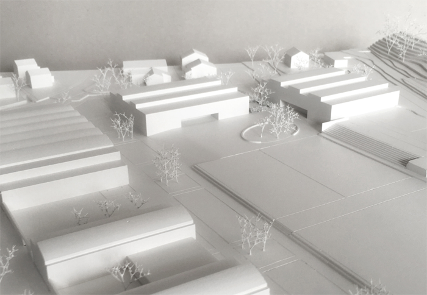
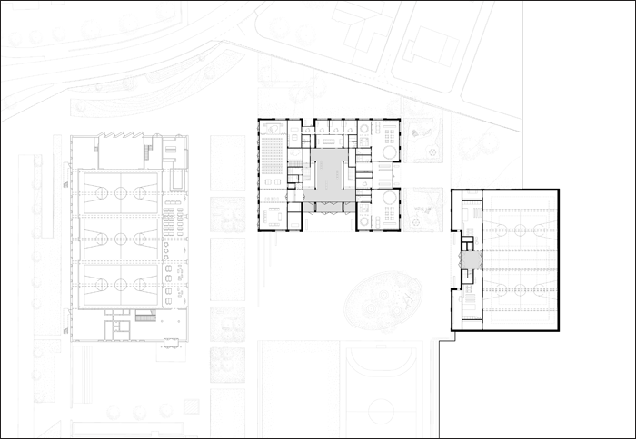
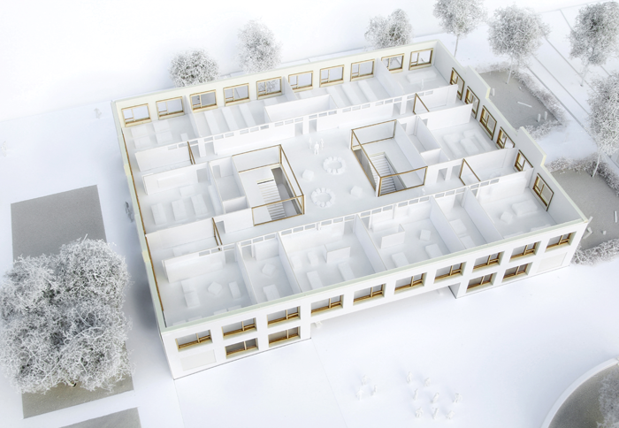
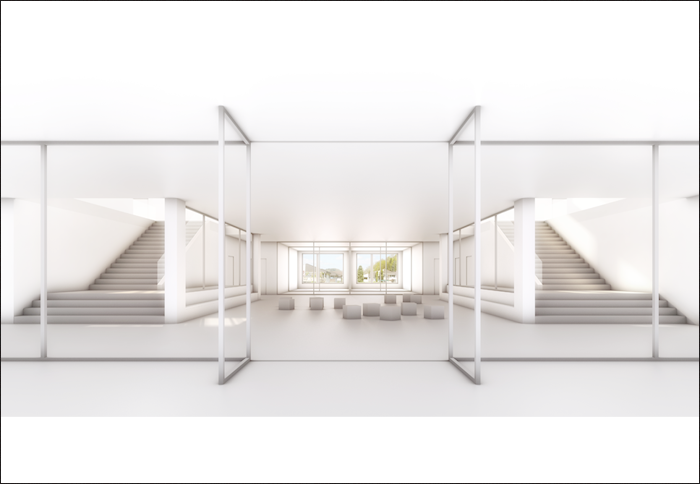
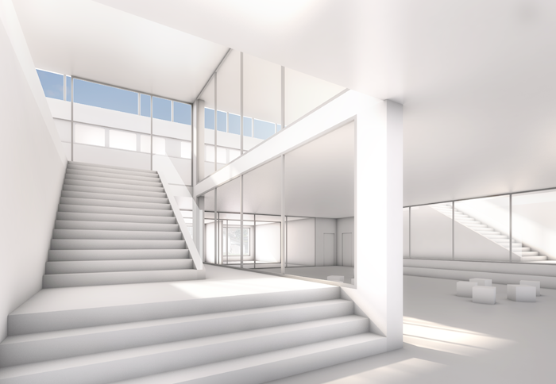
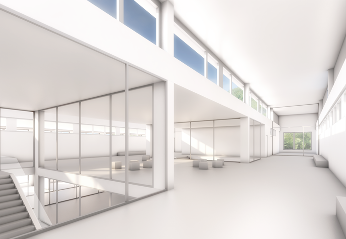
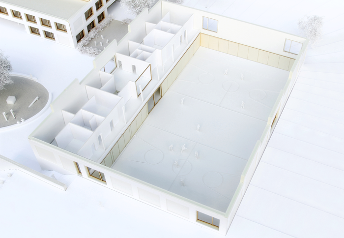

Projekt: SCHULHAUS WÜRENLINGEN, 2.Rang















Projekt: SCHULHAUS WÜRENLINGEN, 2.Rang
Ort: Würenlingen (AG)
Bauherrschaft: Gemeinde Würenlingen
Program: Schulhaus mit Kindergarten und Zweifachsporthalle
Gebäudekosten: 23’500’000 CHF
Datum: 2016
Typ: Studienauftrag nach Präqualifikation, 2. Rang
Team: NYX architectes, Synaxis AG Zürich (Bauingenieur), Andreas Geser Landschaftsarchitekten AG, Jaeger Baumanagement AG
Bilder: Play-Time, NYX architectes